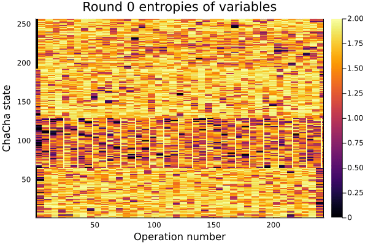
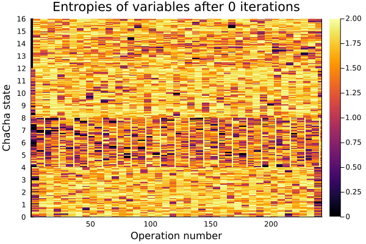

Visualisation of information flow with different schedules
The below visualisations all show the amount of entropy in variables of the factor graph where the y-axis represents the state of ChaCha and the x-axis the number of operations through ChaCha (not every operation affects the whole state so each variable can occupy multiple pixels).
They are run at differing frame rates to show the difference in speed at which iterations are completed.
They are all from the same trace of the actual attack against an 8-bit implementation on a 32-bit microcontroller and are using 2 bit clusters in the factor graph.
Known output, counter and nonce
| Simple schedule |
Forwards backwards |
End rounds |
|
 |
 |
In the above cases it can be seen that information is flowing from the ends of the algorithm into the centre which the end rounds schedule makes good use of while allowing for much faster iteration. The simple schedule and forwards backwards work very similarly to each other although forwards backwards does perform slightly better with known information in the factor graph.
Unknown output, counter and nonce
| Simple schedule |
Forwards backwards |
End rounds |
 |
 |
 |
In this case it can be seen that their is a lot higher number of iterations before the correct state is able to be figured out and that the information is flowing from the middle of the algorithm outwards, which the end rounds schedule does not take advantage of. It can also be seen that the simple schedule is able to find the solution significantly quicker than forwards backwards although they do both find the correct solution.